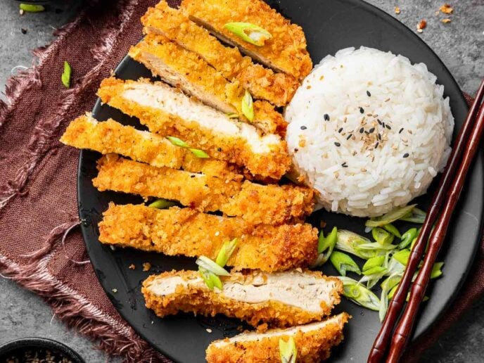

Katsu Chicken

Ingredients
- 2 boneless, skinless chicken breasts
- Salt and pepper to taste
- 1 cup all-purpose flour
- 2 large eggs, beaten
- 1 cup panko breadcrumbs
- Vegetable oil for frying
- Katsu sauce (store-bought or homemade)
- Cooked white rice, for serving
- Shredded cabbage, for serving (optional)
Instructions
- Place the chicken breasts between two sheets of plastic wrap and pound them to an even thickness, about 1/2 inch thick. Season both sides with salt and pepper.
- Set up a breading station with three shallow dishes: one with flour, one with beaten eggs, and one with panko breadcrumbs.
- Dredge each chicken breast in the flour, shaking off any excess. Dip into the beaten eggs, then coat with panko breadcrumbs, pressing gently to adhere.
- In a large skillet, heat about 1/2 inch of vegetable oil over medium-high heat until shimmering.
- Carefully place the breaded chicken breasts in the hot oil. Fry for about 4-5 minutes per side, or until golden brown and cooked through (internal temperature should reach 165°F or 74°C).
- Remove the chicken from the oil and drain on paper towels.
- Slice the chicken into strips and serve over cooked white rice. Drizzle with katsu sauce and serve with shredded cabbage if desired. Enjoy!
Home